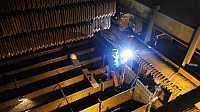
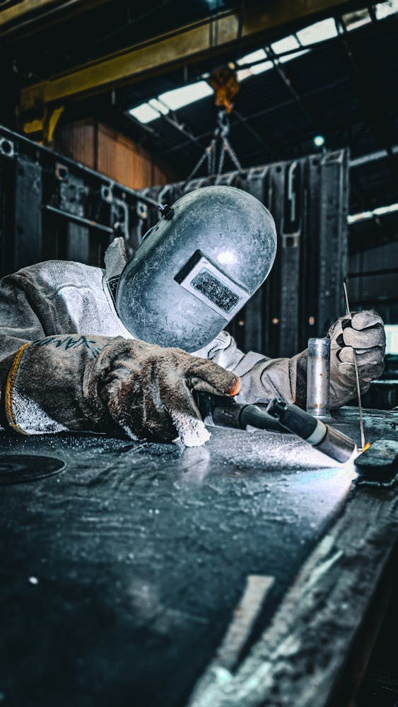

Elementy ciśnieniowe
Naprawy i wymiany elementów ciśnieniowych, sekcji kotłowych oraz odcinków krytycznych instalacji.
Realizujemy naprawy i modernizacje urządzeń podlegających pod dozór techniczny, w tym elementów kotłów, rurociągów i instalacji krytycznych. Każdy zakres przygotowujemy tak, aby ograniczyć ryzyko opóźnień podczas postoju i usprawnić odbiory końcowe.
Łączymy prace warsztatowe i terenowe: przygotowujemy elementy zamienne, wykonujemy montaż oraz prowadzimy kontrolę jakości i kompletację dokumentacji.


Naprawy i wymiany elementów ciśnieniowych, sekcji kotłowych oraz odcinków krytycznych instalacji.

Przebudowa układów armatury, kanałów, kompensatorów i konstrukcji pomocniczych.

Prefabrykacja elementów zamiennych przed wejściem na obiekt, by skrócić czas postoju.
Analizujemy stan instalacji, wyznaczamy zakres krytyczny i przygotowujemy harmonogram.
Wykonujemy elementy zamienne i zestawy montażowe przed wejściem na obiekt.
Realizujemy demontaż, naprawy i montaż pod bieżącą kontrolę jakości i zgodności.
Kończymy proces kompletem dokumentów i wsparciem technicznym podczas rozruchu.


Skontaktuj się z nami. Przygotujemy plan etapowania i zakres prac pod harmonogram postoju.